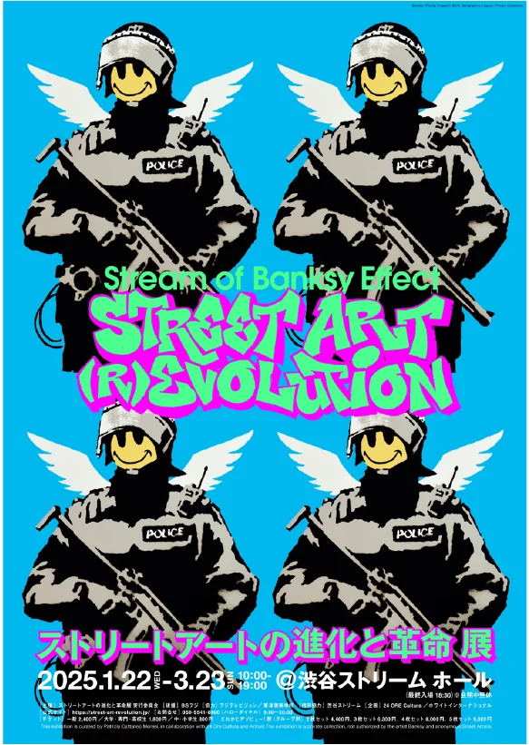

イメージ元のビジュアル

同じオブジェクトを繰り返しおき、それを背景としている
→全く同じモチーフを繰り返し並べることでインパクトのあるポスターになるが、1点がメインで目立つところがないから背景として使い、他の文字などを上に載せることもできる
再解釈して作成したオリジナル作品


同じオブジェクトを繰り返しおき、それを背景としている
→全く同じモチーフを繰り返し並べることでインパクトのあるポスターになるが、1点がメインで目立つところがないから背景として使い、他の文字などを上に載せることもできる